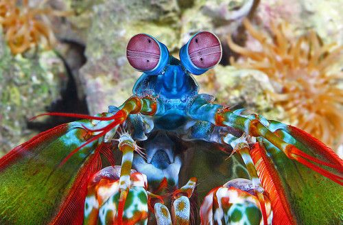

|  |
Angelina Freda SmithI am a second year Computer Science and Engineering student at the Swami Keshvanand Institute of Technology, Management and Gramothan, Jaipur. I contribute consistently to open source projects. I am a certified full stack web developer and I love french pressed coffee. |
| Duration | Education |
|---|---|
| April 2007 - May 2019 | Maharani Gayatri Devi Girls’ School, Jaipur, RJ (Curriculum - Central Board of Secondary Education, India) |
| December 2020 - Current | Swami Keshvanand Institute of Technology, Management and Gramothan, Jaipur, RJ. (Bachelor of Technology - Computer Science Engineering) |